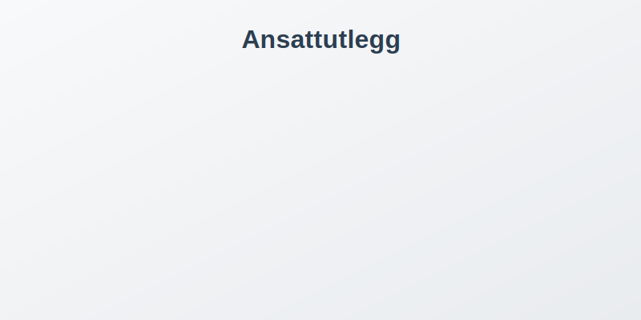
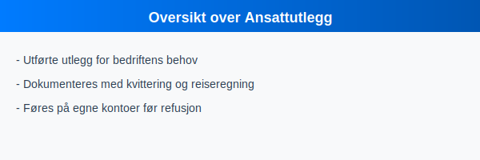
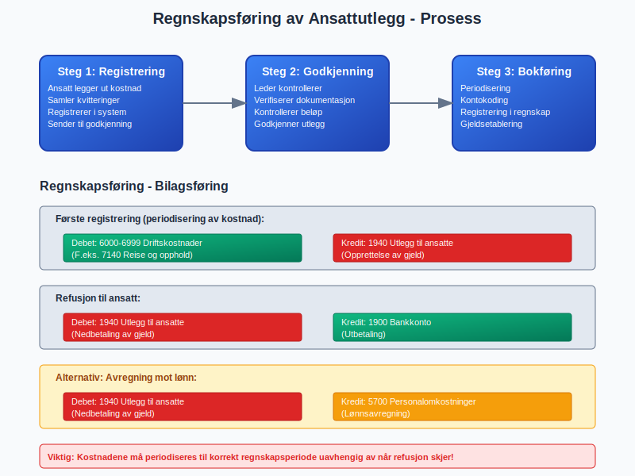
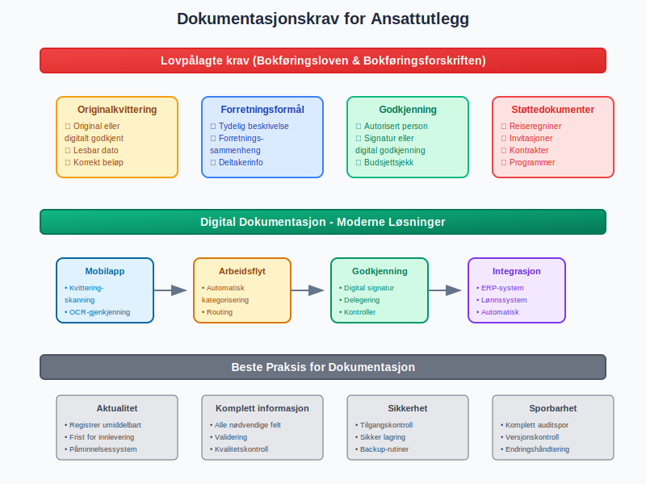
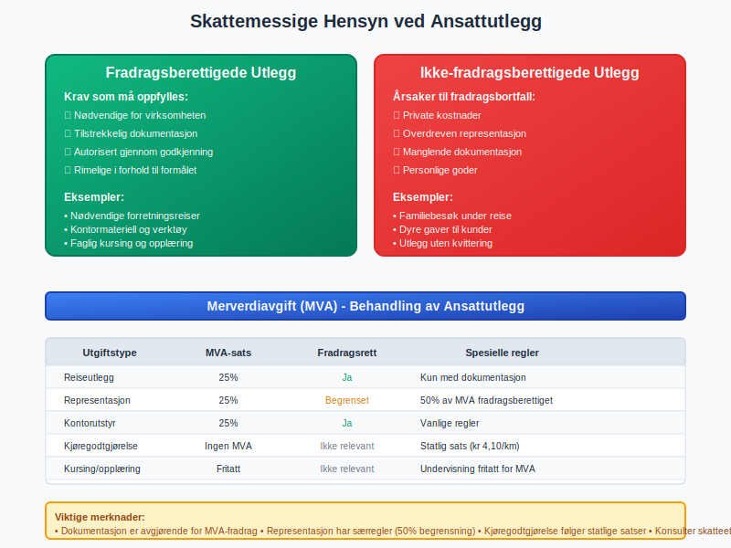
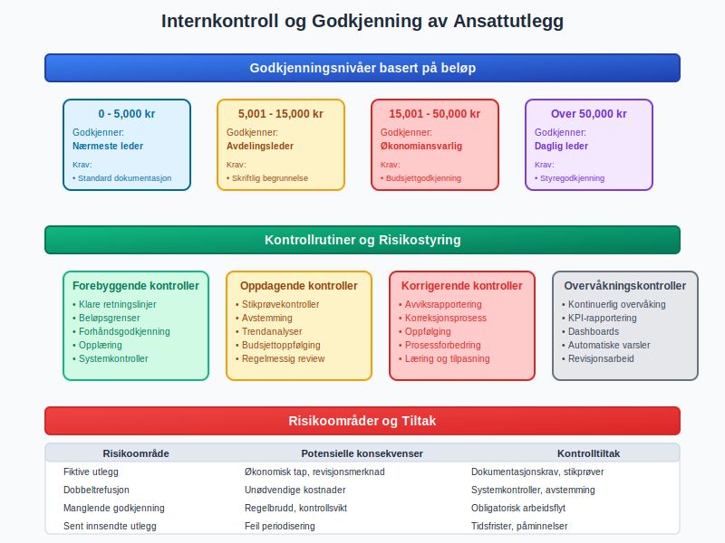
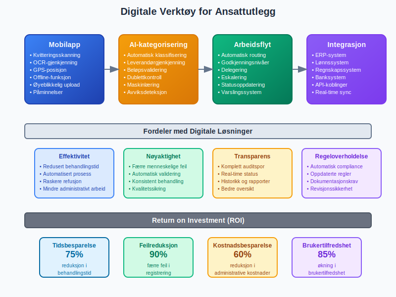
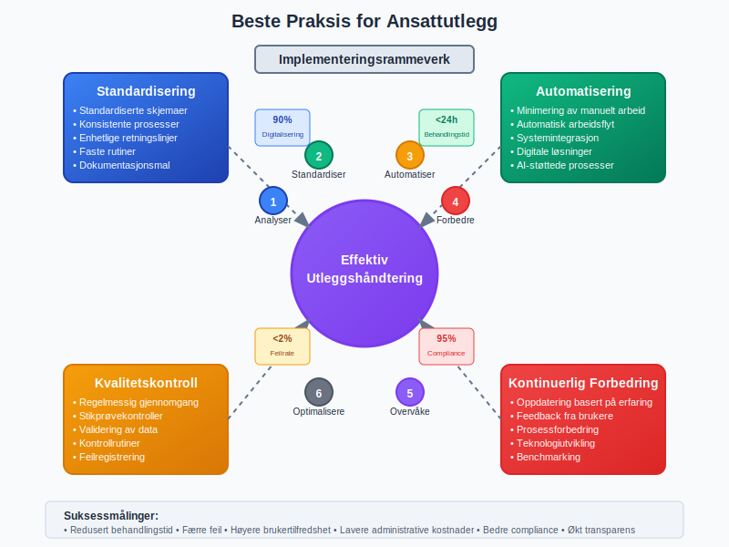
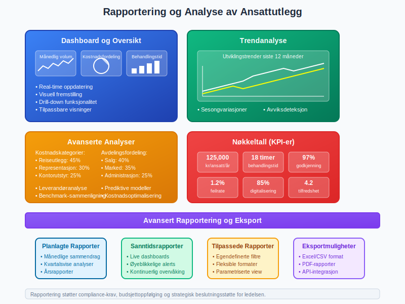

Ansattutlegg er utgifter som ansatte legger ut på vegne av virksomheten med egne midler, og som senere refunderes eller avregnes mot lønnen. Korrekt håndtering av ansattutlegg er kritisk for å sikre nøyaktig regnskapsføring, internkontroll og skattemessig korrekthet i norske virksomheter.

Hva er Ansattutlegg?
Ansattutlegg er en form for utlegg hvor ansatte eller tilknyttede parter dekker kostnader for virksomheten med egne midler, med forventning om refusjon eller avregning mot lønn.
Ansattutlegg oppstår når ansatte må dekke virksomhetsrelaterte kostnader personlig, typisk i situasjoner hvor:
- Det ikke er praktisk mulig å bruke bedriftens bedriftskonto direkte
- Ansatte handler på vegne av virksomheten i akutte situasjoner
- Virksomheten benytter utleggssystem som del av kompensasjonsordningen

Typer Ansattutlegg
Reiseutlegg
Reiseutlegg omfatter alle kostnader knyttet til forretningsreiser og er den vanligste formen for ansattutlegg:
- Transport: Fly, tog, drosje, kollektivtransport og kjøregodtgjørelse (se kjørebok)
- Overnatting: Hotell, andre overnattingssteder og tilleggstjenester
- Diett: Måltider under reise og representasjon
- Reiseforsikring: Nødvendige forsikringer for forretningsreiser
Kontor- og Driftsmateriell
Ansatte kan legge ut for mindre innkjøp av driftsmateriell:
- Kontormateriell: Kulepenn, papir, notisblokker og lignende
- Programvare: Mindre programvarelisenser og digitale verktøy
- Verktøy: Håndverktøy og mindre arbeidsrelatert utstyr
Representasjonsutlegg
Representasjonsutlegg omfatter kostnader knyttet til kundepleie og forretningsutvikling:
- Kundemøter: Måltider og bevertning av kunder
- Konferanser: Påmelding og deltakelse på faglige arrangementer
- Gaver: Representasjonsgaver til kunder og forretningspartnere

Regnskapsføring av Ansattutlegg
Grunnleggende Bokføring
Ansattutlegg må periodiseres til korrekt regnskapsperiode og dokumenteres mot egne kontoer før refusjon eller avregning:
| Transaksjon | Debet | Kredit |
|---|---|---|
| Registrering av utlegg | Relevant utgiftskonto (f.eks. 6000-6999) | 1940 Utlegg til ansatte |
| Refusjon til ansatt | 1940 Utlegg til ansatte | 1900 Bankkonto |
| Avregning mot lønn | 1940 Utlegg til ansatte | 5700 Personalomkostninger |
Kontoplan for Ansattutlegg
Standard kontoer for ansattutlegg i norsk kontoplan:
| Konto | Beskrivelse | Bruk |
|---|---|---|
| 1940 | Utlegg til ansatte | Midlertidig gjeld til ansatte |
| 1950 | Forskudd til ansatte | Forskudd gitt til ansatte |
| 6000-6999 | Driftskostnader | Klassifisering av utgiftstyper |
| 7140 | Reise- og oppholdsutgifter | Spesifikt for reiseutlegg |
| 7300 | Representasjon | Representasjonsutlegg |
Periodisering og Timing
Ansattutlegg må føres i den regnskapsperioden hvor kostnadene påløper, ikke når refusjon skjer.
Periodiseringsprinsippet krever at:
- Utgiften føres når den påløper (ikke når den betales)
- Gjelden til ansatt registreres umiddelbart
- Refusjon behandles som en separat transaksjon

Dokumentasjonskrav
Lovpålagte Krav
Bokføringsloven og bokføringsforskriften stiller strenge krav til dokumentasjon av ansattutlegg:
| Dokumentasjon | Krav | Eksempel |
|---|---|---|
| Originalkvittering | Må være original eller digitalt godkjent kopi | Kvittering fra restaurant, hotell eller transportør |
| Forretningsformål | Tydelig angivelse av formål og sammenheng | “Kundemøte med ABC AS - diskusjon av kontrakt” |
| Dato og beløp | Korrekt datostempel og beløpsinformasjon | Kvittering med lesbar dato og totalbeløp |
| Godkjenning | Autorisasjon fra leder eller controller | Signatur eller digital godkjenning |
Reiseregninger
Reiseregninger må inneholde detaljerte opplysninger:
- Reisemål og formål: Hvor og hvorfor reisen fant sted
- Tidsrom: Fra- og til-dato for reisen
- Kostnadsspesifikasjon: Detaljert oversikt over alle utgifter
- Kvitteringer: Originalkvitteringer for alle utgifter over fastsatt beløp
Digital Dokumentasjon
Moderne virksomheter benytter ofte digitale løsninger for dokumentasjon:
- Kvitteringsskanning: Mobilapper for øyeblikkelig registrering
- Elektronisk arbeidsflyt: Automatisk routing til godkjennere
- Integrasjon: Kobling til ERP-systemer

Skattemessige Hensyn
Fradragsberettigede Utlegg
Skattemessig behandling av ansattutlegg avhenger av utgiftens art og om den følger alminnelige fradragsregler i skatteloven.
Fradragsberettigede utlegg må oppfylle følgende krav:
- Nødvendige for virksomheten: Direkte tilknyttet virksomhetens drift
- Dokumentert: Tilstrekkelig dokumentasjon i henhold til kravene
- Godkjent: Autorisert gjennom virksomhetens godkjenningsprosedyrer
- Rimelige: Kostnadene må være rimelige i forhold til formålet
Ikke-fradragsberettigede Utlegg
Følgende utlegg gir ikke fradragsrett:
- Private kostnader: Kostnader som ikke er direkte virksomhetsrelaterte
- Overdreven representasjon: Utgifter som overstiger det rimelige
- Manglende dokumentasjon: Utlegg uten tilstrekkelig dokumentasjon
- Personlige goder: Kostnader som primært kommer ansatte til gode
Merverdiavgift (MVA)
MVA-behandling av ansattutlegg følger vanlige regler:
| Utgiftstype | MVA-sats | Fradragsrett |
|---|---|---|
| Reiseutlegg | 25% | Ja (med dokumentasjon) |
| Representasjon | 25% | Begrenset (50% av MVA) |
| Kontorutstyr | 25% | Ja |
| Kjøregodtgjørelse | Ingen MVA | Ikke relevant |

Internkontroll og Godkjenning
Godkjenningsprosedyrer
Effektiv internkontroll reduserer risiko for feil og misligheter i håndtering av ansattutlegg.
Godkjenningsnivåer bør etableres basert på:
- Beløpsgrenser: Ulike godkjenningsnivåer basert på utgiftens størrelse
- Utgiftstype: Spesifikke krav for ulike typer utlegg
- Organisatorisk nivå: Godkjenning på passende ledernivå
Eksempel på Godkjenningsnivåer
| Beløp | Godkjenner | Ekstra Krav |
|---|---|---|
| 0 - 5,000 kr | Nærmeste leder | Standard dokumentasjon |
| 5,001 - 15,000 kr | Avdelingsleder | Skriftlig begrunnelse |
| 15,001 - 50,000 kr | Økonomiansvarlig | Budsjettgodkjenning |
| Over 50,000 kr | Daglig leder | Styregodkjenning |
Kontrollrutiner
Kontrollrutiner bør inkludere:
- Stikprøvekontroller: Regelmessig gjennomgang av utlegg
- Budsjettoppfølging: Overvåking av utlegg mot budsjett
- Trendanalyser: Identifikasjon av uvanlige mønstre
- Revisjonsarbeid: Ekstern gjennomgang av rutiner

Digitale Verktøy og Automatisering
Moderne Utleggsløsninger
Digitale verktøy effektiviserer hele utleggsprosessen:
- Mobilapper: Øyeblikkelig registrering og kvitteringsskanning
- Automatisk kategorisering: AI-basert klassifisering av utgifter
- Arbeidsflyt: Automatisert routing til godkjennere
- Integrasjon: Kobling til lønnssystem og regnskap
Fordeler med Digitalisering
| Område | Fordel | Beskrivelse |
|---|---|---|
| Effektivitet | Redusert behandlingstid | Raskere fra registrering til refusjon |
| Nøyaktighet | Færre feil | Automatisk validering og kontroll |
| Sporbarhet | Bedre dokumentasjon | Komplett auditspor for alle transaksjoner |
| Compliance | Regeloverholdelse | Automatisk sikring av lovkrav |
Integrasjon med Regnskapssystem
Integrasjon med regnskapssystem gir:
- Automatisk bokføring: Direkte overføring til riktige kontoer
- Real-time oppdatering: Øyeblikkelig oppdatering av balanse
- Rapportering: Automatisk generering av utleggsrapporter
- Avregning: Automatisk avregning mot lønn

Utleggsretningslinjer og Policyer
Utforming av Utleggsretningslinjer
Klare retningslinjer forebygger misforståelser og sikrer konsistent håndtering av ansattutlegg.
Utleggsretningslinjer bør dekke:
- Definisjon av godkjente utlegg: Hva som kan refunderes
- Beløpsgrenser: Maksimalbeløp for ulike utgiftstyper
- Dokumentasjonskrav: Spesifikke krav til kvitteringer og dokumentasjon
- Tidsfrist: Når utlegg må være innsendt for refusjon
- Godkjenningsprosess: Hvem som kan godkjenne ulike typer utlegg
Kommunikasjon og Opplæring
Ansattopplæring er kritisk for suksess:
- Introduksjonsprogram: Opplæring for nye ansatte
- Årlige oppfriskeringer: Regelmessig oppdatering av kunnskap
- Praktiske eksempler: Konkrete case-studier og eksempler
- Tilgjengelige ressurser: Enkelt tilgjengelige retningslinjer og hjelpemidler
Vanlige Utfordringer og Løsninger
Typiske Problemområder
| Problem | Årsak | Løsning |
|---|---|---|
| Sent innsendte utlegg | Manglende rutiner | Automatiske påminnelser og frister |
| Ufullstendig dokumentasjon | Uklare retningslinjer | Sjekklister og templates |
| Feil kategorisering | Manglende kunnskap | Automatisk forslag og validering |
| Dubletter | Manuell registrering | Automatisk duplikatsjekk |
Beste Praksis
Anbefalte tiltak for effektiv utleggshåndtering:
- Standardisering: Bruk av standardiserte skjemaer og prosesser
- Automatisering: Minimering av manuelt arbeid
- Kvalitetskontroll: Regelmessig gjennomgang av prosesser
- Kontinuerlig forbedring: Oppdatering basert på erfaringer

Juridiske Aspekter
Arbeidsgiversansvar
Arbeidsgivere har ansvar for:
- Rimelig refusjon: Refusjon av berettigede utlegg innen rimelig tid
- Dokumentasjon: Oppbevaring av dokumentasjon i henhold til bokføringsloven
- Skatteforhold: Korrekt håndtering av skattemessige implikasjoner
Ansattes Rettigheter
Ansatte har rett til:
- Refusjon: Få refundert legitimt berettigede utlegg
- Forutsigbarhet: Klare retningslinjer for hva som dekkes
- Rimelig behandlingstid: Refusjon innen rimelig tid
Rapportering og Analyse
Utleggsrapporter
Regelmessig rapportering gir innsikt i:
- Utgiftsmønstre: Trender og sesongvariasjoner
- Kostnadscontrolling: Sammenligning mot budsjett
- Avviksanalyser: Identifikasjon av uvanlige transaksjoner
- Leverandøranalyser: Evaluering av leverandørbruk
Nøkkeltall (KPI-er)
| Nøkkeltall | Formål | Beregning |
|---|---|---|
| Gjennomsnittlig utlegg per ansatt | Kostnadskontroll | Totale utlegg / antall ansatte |
| Behandlingstid | Effektivitet | Tid fra registrering til refusjon |
| Godkjenningsgrad | Kvalitet | Andel godkjente vs. avviste utlegg |
| Digitalisering | Modernisering | Andel digitalt registrerte utlegg |

Fremtidige Trender
Teknologisk Utvikling
Fremtidige utviklinger inkluderer:
- Kunstig intelligens: Automatisk kategorisering og validering
- Blockchain: Sikker og transparent dokumentasjon
- Mobil-først: Heldigitale prosesser optimert for mobile enheter
- Integrasjon: Sømløs kobling mellom alle systemer
Regulatoriske Endringer
Potensielle regulatoriske endringer:
- Digitalisering: Krav til elektronisk dokumentasjon
- Rapportering: Utvidede rapporteringskrav
- Automatisering: Standardisering av digitale prosesser
Relaterte Emner
Tilknyttede Regnskapskonsepter
- Utlegg: Generell informasjon om alle typer utlegg
- Ansattreskontro: Detaljert informasjon om ansattkontoer
- Avregning: Hvordan utlegg avregnes mot lønn
- Personalomkostninger: Bredere perspektiv på personalkostnader
Systemintegrasjon
- ERP-system: Integrasjon med virksomhetssystemer
- Lønn: Sammenheng med lønnssystem
- Budsjett: Budsjettplanlegging av utlegg
Denne artikkelen gir en omfattende oversikt over ansattutlegg i norsk regnskap. For spesifikke spørsmål eller komplekse situasjoner, anbefales det å konsultere med regnskapsfører eller revisor.